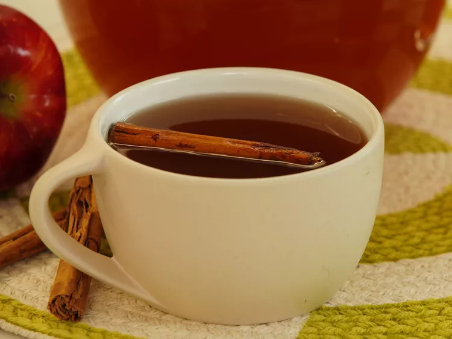

Apple Cider

Description
Found a drink recipe playing the outer worlds
Ingredients
- 1 Gallon - Spiced Apple Cider
- 1 Gallon - Apple Juice
- 8 - 10 cinnimon sticks
- 1 & 1/2 cup Granulated Sugar
- 1 & 1/2 cup Brown Sugar (I use lightbrown)
- 750 ml bottle of 190 Proof grain alcohol
- 1 liter Whipped Cream Vodka
Instructions:
- Combine all ingredients in a large stock pot, except for the alcohol, and bring to a boil.
- Let it simmer for about 10 minutes.
- Remove the mixture from heat & let cool to room temperature.
- Once the mixture is completely cool, add in the alcohol. Transfer to sterile mason jars (I use 5 of the big 2000+ ml jars)
- I also divide up the cinnamon sticks to that each jar has one or two.
- Store them in a cool dark dry place.